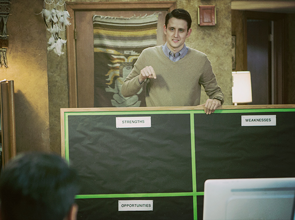
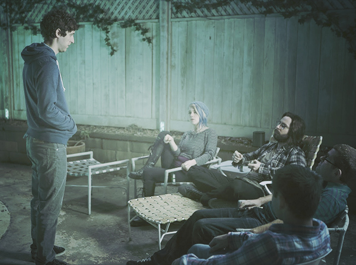

Pied Piper Pic: Erlich Crushes It

Is it Erlich, or a mixed-martial-arts pugilist? The resemblance is uncanny!
Is it Erlich, or a mixed-martial-arts pugilist? The resemblance is uncanny!

Sometimes, the information superhighway leads to the poorly lit truck stop of IP theft!

It boggles my mind that there are those who are not familiar with SWOT. This decision-making tool for businesses should be in every start-up’s metaphorical toolbox!
It might as well be called the “Allen Wrench of the Cubicle” for its myriad applications. Analyzing the Strengths, Weaknesses, Opportunities and Threats implicit in a decision oftentimes helps lead to a more correct decision than that which one might otherwise have made. It is also an opportunity to practice good handwriting, which has sadly declined in this age of keyboards. (Spencerian script? What’s that?)
We at Pied Piper recently had a knotty decision to make, so I brought out the old SWOT board, and if everyone had not immediately left the room, I have no doubt that it would have been quite helpful.
(Please note: SWOT-ing is not to be confused with SWAT-ing: the hateful “prank” of calling the police and saying a horrible crime is taking place at someone’s home so that law enforcement kicks in their door and terrifies them. I have been SWAT-ed thrice, once while I was in the bath, filling in an actual SWOT board, ironically.)

The exact moment our Homicide partnership became a livestream…of tears (of betrayal).
If you saw the stunt that the energy drink Homicide recently livestreamed on their site, you may have seen “Powered by Endframe” at the bottom of the screen.
Since I had announced in this very blog that we, Pied Piper, would be handling the streaming for this event, you perhaps thought, “Oh, I guess Pied Piper changed their name. That’s a pity, because it was both compelling and whimsical.” Well, that was not us. Endframe is not us. It is, however, our tech, which Endframe’s founders stole in collusion with the VC firm Branscombe Ventures.
This was the brain rape that made me cry out in betrayal, to someone I thought was a friend: “Say it ain’t so, bro!” It hurt as much as the loss of Campbell Scott hurt Julia Roberts in the shamefully un-sequeled Dying Young. Endframe? More like FriendShame, if you ask me!
We may well initiate legal action against these pretenders to the throne of middle-out technology. And if so, we have no doubt we will prevail, because not only do we have better tech, we are better people. And as we all know: In this Valley, the good guys win.

Have you navigated to our website, and been surprised to see livestreaming video of a large egg, in a nest of some kind? No, we are not pivoting into an egg-focused competitor to Amazon Prime, we have launched…our Condor Cam!
These majestic birds are nesting at the Carmel Natural History Museum’s Wildlife Preserve in Carmel, California. One of the largest species of non-flightless birds, California Condors are on the critically endangered species list. In 1982, fewer than 25 were left in the wild. Today, there are more than 160 of these elegant, long-necked “Julia Robertses of the avian kingdom,” as some like to call them.
What you are watching—that large, carefully arranged nest of twigs held together by condor feces—is called an “aerie.” And the lone egg, of course, contains a gestating condor fetus, waiting to hatch after an incubation period of 52 to 54 days. This baby bird could live to 60 years of age! And condors mate for life, so its future husband, wife or same-sex partner may be being born somewhere this very second. It’s true: As any scientist will tell you, sexuality is a continuum in the natural world as well!
We are able to livestream this miracle of nature to you in 4K because of our ground-breaking middle-out compression software—the market standard. And by doing so we hope to not only raise awareness of our company, but also of the endangered status of this rare, beautiful, carrion-eating close relative of the vulture.

I have shocking news. Pied Piper is involved in the business of…Homicide.
Whoa, hold on now! Before you go dialing 911, I’m talking about the energy drink Homicide.
You know, from the “Energy Drink That Doesn’t Give A F**k!” ads starring Tucker Max, that pop up every time you’re on Vice.com? Well, that same refreshing, high-in-taurine soft drink empire is hiring Pied Piper to power its livestream of an upcoming stunt. We saw the humiliation Hooli suffered after its UFC livestream debacle and thought a livestream of our own would be a neat way to differentiate us from the soulless behemoth currently trying to sue us out of existence. So you might say our doing business with Homicide was justifiable! (Homicide, that is.)
We were able to get in touch with Homicide’s founder and CEO, Aaron “Double-A” Anderson, because of our investor Erlich Bachmann’s collegiate connection, and we look forward to formally announcing the stunt soon!

A good CEO communicates. But here, ours is having trouble doing so, because of 140 decibels of “death metal,” if that is even a thing.
As you may know, the UFC have contracted with Hooli to use Nucleus to livestream one of their championship fights. But while the United Fighting Club does indeed stage some excellent combat spectacles, I strongly urge you all not to watch.
The Nucleus system was developed from our proprietary technology, which Hooli stole from Pied Piper despite their ridiculous lawsuit claiming the reverse. So if you watch this fight, it won’t just be two gigantic, shaven-headed, oiled, tattooed men getting kicked in the face…the same will also be happening to Pied Piper.
J’accuse, hypocrite! After complaining unzoned businesses are illegal and drive down property values, neighbor Noah is caught harboring illegal ferrets! In a related note, I now live in his guest house.